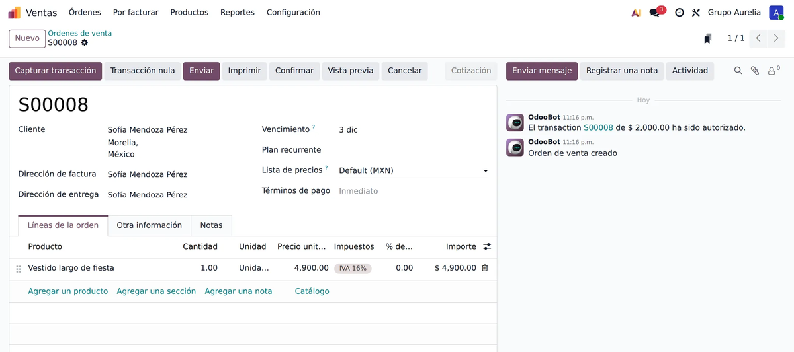
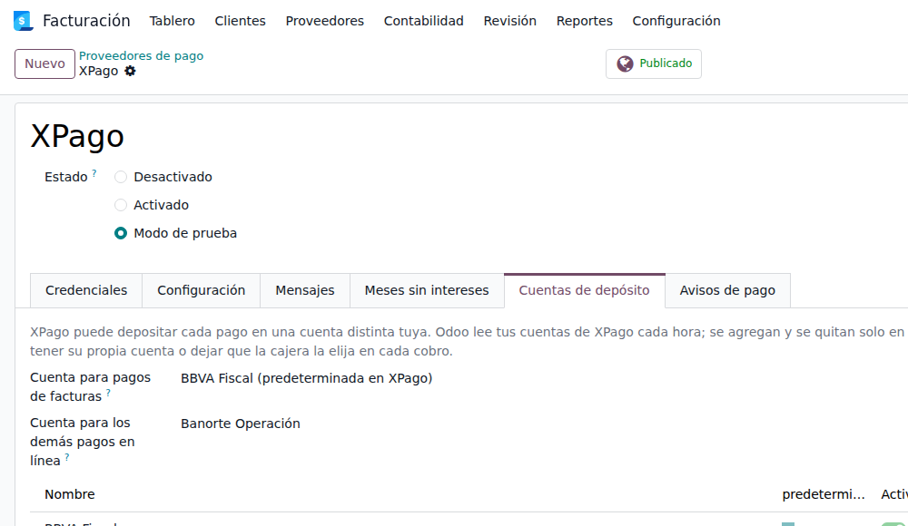
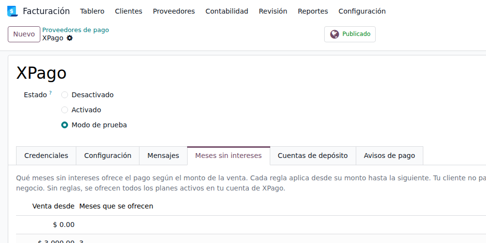
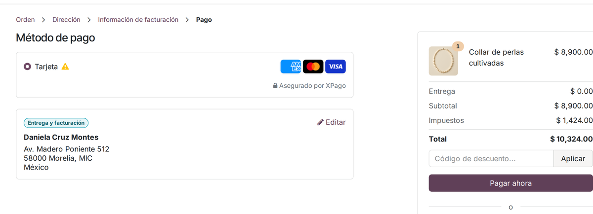
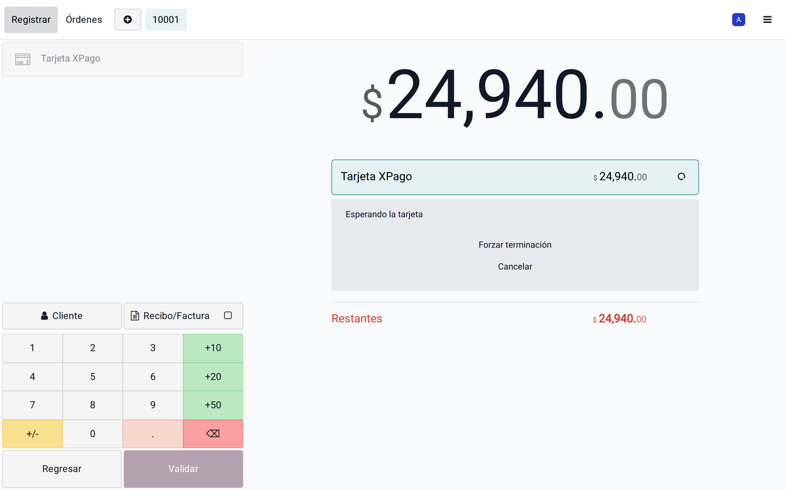
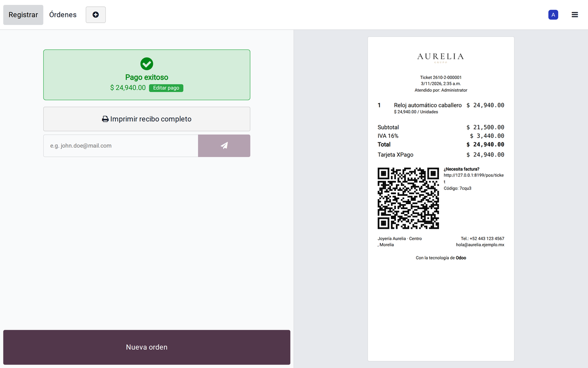
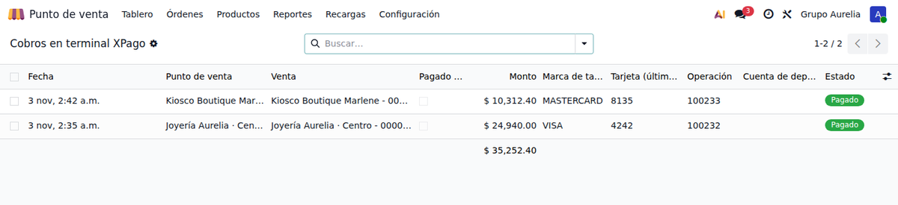
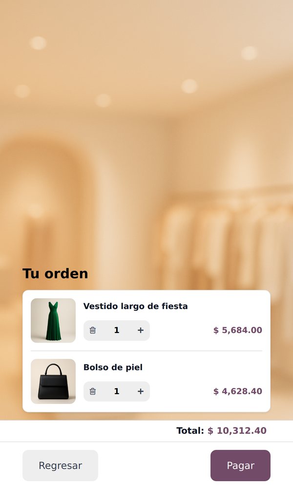
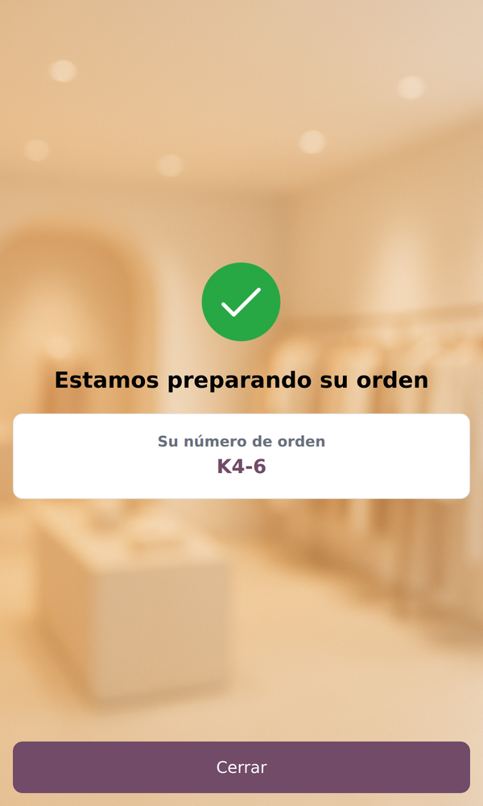

<section class="oe_container" style="font-family:Inter,Arial,sans-serif;color:#24201C">
  <div style="max-width:1080px;margin:0 auto;padding:24px 16px">
    <h2 style="font-size:34px;margin:0 0 8px;text-align:center">XPago: cobra con tarjeta en todo tu Odoo</h2>
    <p style="text-align:center;font-size:18px;color:#776E64;margin:0 0 28px">Una sola app para la caja, el kiosco, la tienda en l&#237;nea, las ligas de pago y las suscripciones, con una sola cuenta y una sola comisi&#243;n: <b style="color:#B8322A">2.99 % + IVA</b>. M&#233;xico.</p>
    <p style="text-align:center;color:#776E64;margin:0 0 16px"><i>Odoo payment provider for Mexico: accept Visa, Mastercard and American Express in pesos across the Point of Sale, self-order kiosk, eCommerce, invoices, payment links and subscriptions, with interest-free installments (meses sin intereses).</i></p>
<p style="text-align:center;font-size:15px;margin:0 0 28px"><a href="https://xpago.mx/pasarela-de-pago-odoo" style="color:#B8322A">Pasarela de pago para Odoo</a> &#183; <a href="https://xpago.mx/link-de-pago-odoo" style="color:#B8322A">Link de pago en Odoo</a> &#183; <a href="https://xpago.mx/meses-sin-intereses-odoo" style="color:#B8322A">Meses sin intereses en Odoo</a> &#183; <a href="https://xpago.mx/terminal-de-pago-odoo" style="color:#B8322A">Terminal para el punto de venta</a> &#183; <a href="https://xpago.mx/odoo-payments-mexico" style="color:#B8322A">In English</a></p>

    <h3 style="font-size:26px;margin:32px 0 14px">Lo que XPago hace y otras opciones de cobro en Odoo no</h3>
    <table style="width:100%;border-collapse:collapse;font-size:15px">
      <thead><tr style="background:#F1E8DB"><th style="text-align:left;padding:10px">Funci&#243;n</th><th style="padding:10px">Pasarelas en l&#237;nea</th><th style="padding:10px">Conectores de terminal</th><th style="padding:10px;color:#B8322A">XPago</th></tr></thead>
      <tbody>
        <tr><td style="padding:10px;border-bottom:1px solid #E7DDCF"><b>Cobros de suscripciones</b> con tarjeta guardada, que Odoo cobra y factura cada periodo</td><td style="text-align:center">Algunas</td><td style="text-align:center">No</td><td style="text-align:center;color:#1E8E4E"><b>S&#237;</b></td></tr>
        <tr><td style="padding:10px;border-bottom:1px solid #E7DDCF"><b>Retener un pago</b> (dep&#243;sito en garant&#237;a) y cobrarlo completo, <b>en parte</b>, o liberarlo</td><td style="text-align:center">Pocas</td><td style="text-align:center">No</td><td style="text-align:center;color:#1E8E4E"><b>S&#237;</b></td></tr>
        <tr><td style="padding:10px;border-bottom:1px solid #E7DDCF"><b>Elegir a qu&#233; cuenta se deposita cada cobro</b> (hasta 10): por terminal, por la cajera al cobrar, o por sucursal, caja o raz&#243;n social</td><td style="text-align:center">No</td><td style="text-align:center">No</td><td style="text-align:center;color:#1E8E4E"><b>S&#237;</b></td></tr>
        <tr><td style="padding:10px;border-bottom:1px solid #E7DDCF"><b>Meses sin intereses por monto o por producto</b>, decididos desde Odoo</td><td style="text-align:center">No</td><td style="text-align:center">No</td><td style="text-align:center;color:#1E8E4E"><b>S&#237;</b></td></tr>
        <tr><td style="padding:10px;border-bottom:1px solid #E7DDCF"><b>Kiosco de autoservicio</b> de Odoo con terminal, para negocios en M&#233;xico</td><td style="text-align:center">No</td><td style="text-align:center">Muy pocos</td><td style="text-align:center;color:#1E8E4E"><b>S&#237;</b></td></tr>
        <tr><td style="padding:10px;border-bottom:1px solid #E7DDCF"><b>Conciliaci&#243;n en Odoo</b> con comisi&#243;n, IVA de la comisi&#243;n y cuenta, y detecci&#243;n de <b>cobros sin venta</b></td><td style="text-align:center">No</td><td style="text-align:center">No</td><td style="text-align:center;color:#1E8E4E"><b>S&#237;</b></td></tr>
        <tr><td style="padding:10px;border-bottom:1px solid #E7DDCF">La misma cuenta y comisi&#243;n en caja, kiosco, en l&#237;nea, ligas y suscripciones</td><td style="text-align:center">Rara vez</td><td style="text-align:center">Rara vez</td><td style="text-align:center;color:#1E8E4E"><b>S&#237;</b></td></tr>
        <tr><td style="padding:10px">Aviso en Odoo por cada pago que entra</td><td style="text-align:center">No</td><td style="text-align:center">No</td><td style="text-align:center;color:#1E8E4E"><b>S&#237;</b></td></tr>
        <tr><td style="padding:10px"><b>Un solo ticket:</b> el comprobante de la tarjeta sale en el mismo ticket de la venta de Odoo, sin voucher aparte</td><td style="text-align:center">No</td><td style="text-align:center">No</td><td style="text-align:center;color:#1E8E4E"><b>S&#237;</b></td></tr>
      </tbody>
    </table>

    <h3 style="font-size:26px;margin:40px 0 10px">Cobros recurrentes: las suscripciones se cobran solas</h3>
    <p>Tu cliente guarda su tarjeta una sola vez. Las suscripciones nativas de Odoo cobran y facturan cada periodo con XPago, sin que hagas nada.</p>
    

    <h3 style="font-size:26px;margin:40px 0 10px">Dep&#243;sito en garant&#237;a: ret&#233;n, cobra en parte o libera</h3>
    <p>Retienes un monto en la tarjeta hasta 7 d&#237;as; despu&#233;s lo cobras completo o en parte, o lo liberas, con los botones nativos de Odoo.</p>
    

    <h3 style="font-size:26px;margin:40px 0 10px">Cada cobro, a la cuenta que elijas</h3>
    <p>Odoo lee tus cuentas de XPago solo. Los pagos de factura pueden ir a una cuenta y los dem&#225;s a otra; en la caja, cada terminal tiene su cuenta o la cajera la elige.</p>
    

    <h3 style="font-size:26px;margin:40px 0 10px">Meses sin intereses por monto</h3>
    <p>3, 6, 9 o 12 meses seg&#250;n el monto de la venta. Tu cliente no paga intereses; la comisi&#243;n de cada plazo la paga tu negocio. <a href="https://xpago.mx/meses-sin-intereses-odoo" style="color:#B8322A">C&#243;mo funcionan los meses sin intereses en Odoo</a>.</p>
    

    <h3 style="font-size:26px;margin:40px 0 10px">Reglas de cobro: meses y cuenta seg&#250;n lo que se vende</h3>
    <p>Decide los meses sin intereses y la cuenta de dep&#243;sito por <b>producto, variante, categor&#237;a, etiqueta, precio del producto o total de la venta</b>, con vigencia. Por ejemplo: 12 meses en diamantes de m&#225;s de $20,000, o las piezas de un consignatario depositadas en su propia cuenta. Las reglas se prueban en orden, como las promociones de Odoo; la venta ofrece solo los meses que permiten todos sus productos.</p>
    <p>En l&#237;nea, el pago ofrece solo esos meses y deposita en la cuenta de la regla. En la caja y el kiosco (con las apps de terminal) la cuenta se aplica igual; los meses solo se le muestran a la cajera, porque la terminal ofrece los de tu cuenta XPago.</p>
    <p style="color:#776E64"><i>Payment rules: months without interest and deposit account by product, category, tag, price or sale total.</i></p>

    <h3 style="font-size:26px;margin:40px 0 10px">Tienda en l&#237;nea, ligas y facturas</h3>
    <p>El m&#233;todo nativo &#171;Tarjeta&#187; con Visa, Mastercard y Amex. El pedido se confirma aunque el cliente cierre la p&#225;gina, y las facturas quedan &#171;Pagado&#187; al instante.</p>
    
    

    <h3 style="font-size:26px;margin:40px 0 10px">En la caja: la terminal XPago</h3>
    <p>La caja manda el monto a la terminal y la tarjeta aprobada regresa al pedido. <i>Card payment terminal for the Odoo Point of Sale: the POS sends the amount to the Newland terminal and the approved card comes back to the order.</i></p>
    <ul style="font-size:16px;line-height:1.8">
      <li><b>Terminal nativa de Odoo:</b> &#171;Esperando la tarjeta&#187;, cancelar desde la caja y validaci&#243;n autom&#225;tica; la tarjeta, la autorizaci&#243;n y la operaci&#243;n quedan en el pago.</li>
      <li><b>La terminal es tu caja:</b> la caja de Odoo corre en las terminales Newland Android, con lector de c&#243;digos de barras y tarjeta SIM (cobra sin WiFi).</li>
      <li><b>Hasta 10 cuentas de dep&#243;sito:</b> cada terminal con su cuenta, o la cajera la elige en cada cobro.</li>
      <li><b>Reglas de cobro por producto:</b> la cuenta de dep&#243;sito seg&#250;n el producto, la categor&#237;a, la etiqueta o el precio. Si una venta lleva productos de cuentas distintas, la caja puede <b>dividir el cobro</b>: una parte por cuenta, cada una pasada con la tarjeta. Los meses de la regla se le muestran a la cajera (la terminal ofrece los de tu cuenta XPago). <i>Payment rules by product, with split charges per deposit account.</i></li>
      <li><b>Conciliaci&#243;n</b> con comisi&#243;n, IVA de la comisi&#243;n y cuenta, contra tus ventas de Odoo.</li>
      <li><b>Cobros sin venta:</b> encuentra la tarjeta cobrada que no qued&#243; como venta antes del corte.</li>
      <li><b>Pantalla chica:</b> categor&#237;as en una fila y m&#233;todos de pago compactos para la pantalla de la terminal.</li>
      <li><b>Un solo ticket, sin voucher aparte:</b> el comprobante de la tarjeta (autorizaci&#243;n, operaci&#243;n y leyenda del pagar&#233; con l&#237;nea para firma) sale dentro del ticket de la venta, en la miniprinter que ya tienes con Odoo o en la N950, y tambi&#233;n en el ticket que mandas por correo o WhatsApp. Las terminales sin impresora (N750, N750P y tablet P70) no necesitan imprimir un voucher. Activado de f&#225;brica, con leyenda editable. <i>One receipt: the card voucher is printed inside the Odoo sale receipt, no separate voucher slip.</i></li>
      <li><b>Devoluciones desde la caja:</b> una devoluci&#243;n pagada con XPago regresa el cobro completo a la misma tarjeta, el mismo d&#237;a. <i>Same-day refunds to the card from the POS.</i></li>
      <li>Aviso en Odoo por cada cobro aprobado.</li>
    </ul>
    
    
    
    
    
    
    <p style="text-align:center;margin-top:18px"></p>

    <h3 style="font-size:26px;margin:40px 0 10px">Kiosco de autoservicio</h3>
    <p>Tu cliente pide en el kiosco de Odoo y paga en la terminal XPago de al lado; el pedido entra ya pagado, a la cuenta de las reglas de cobro de lo que pidi&#243;. El comprobante de la tarjeta sale en el mismo ticket del pedido. <i>Self-order kiosk for Odoo with card payment on the XPago terminal.</i></p>
    <p style="text-align:center">
      
      
      
    </p>

    <h3 style="font-size:26px;margin:40px 0 10px">Precios</h3>
    <ul style="font-size:16px;line-height:1.7">
      <li>App gratis. Comisi&#243;n de <b>2.99 % + IVA</b> con Visa y Mastercard y <b>3.49 % + IVA</b> con American Express.</li>
      <li>$0 de renta mensual, sin m&#237;nimo de ventas ni plazo forzoso. Dep&#243;sito al d&#237;a h&#225;bil siguiente.</li>
      <li><b>Una sola app</b> para la caja, el kiosco, la tienda en l&#237;nea, las ligas, las facturas y las suscripciones. Al abrir tu cuenta XPago recibes tu llave XPago; la escribes en Odoo y listo.</li>
      <li>Instalas solo <b>XPago</b>: la parte de la caja se agrega sola si usas el Punto de Venta de Odoo, y la del kiosco si usas el Kiosco. Si solo vendes en l&#237;nea, no se instala nada de m&#225;s. <i>Install only XPago: the Point of Sale and kiosk parts add themselves when you use those apps.</i></li>
      <li>&#191;Ya ten&#237;as las apps XPago anteriores? Al instalar esta, tus ajustes, cuentas de dep&#243;sito, reglas y cobros pasan solos.</li>
    </ul>
    <h3 style="font-size:22px;margin:40px 0 10px">Odoo payment provider for Mexico</h3>
    <p>XPago is a card payment provider for Odoo 17, 18, 19 and 20 for businesses registered in Mexico. One app: card terminals in the Point of Sale and the self-order kiosk, online card payments, payment links, saved cards for Odoo Subscriptions, authorize and capture (full or partial), same-day refunds and interest-free installments with rules by product or order total. Deposits in pesos to your Mexican bank account the next business day. <a href="https://xpago.mx/odoo-payments-mexico" style="color:#B8322A">XPago in English</a>.</p>
    <p style="margin-top:24px">&#191;Necesitas una cuenta XPago o terminales? <a href="https://xpago.mx/alta" style="color:#B8322A">Abre tu cuenta XPago</a> &#183; <a href="https://xpago.mx">xpago.mx</a> &#183; WhatsApp 443 688 7346 &#183; hola@xubax.com</p>
  </div>
</section>
